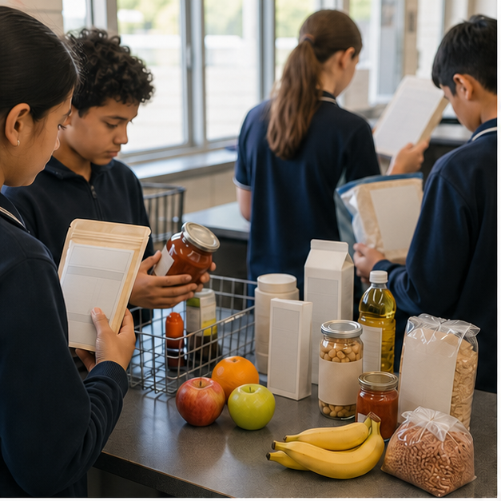
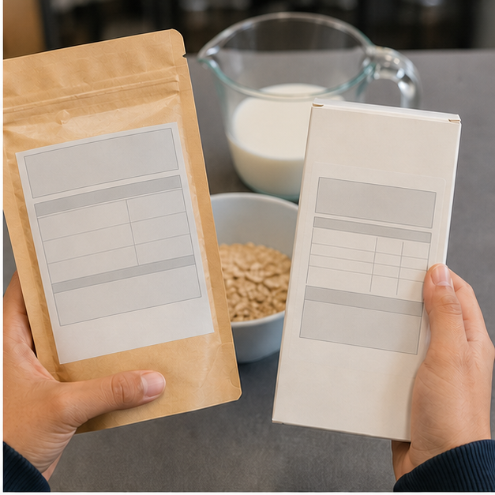
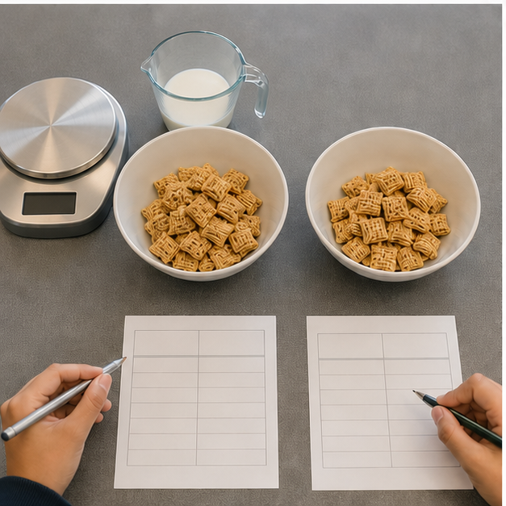
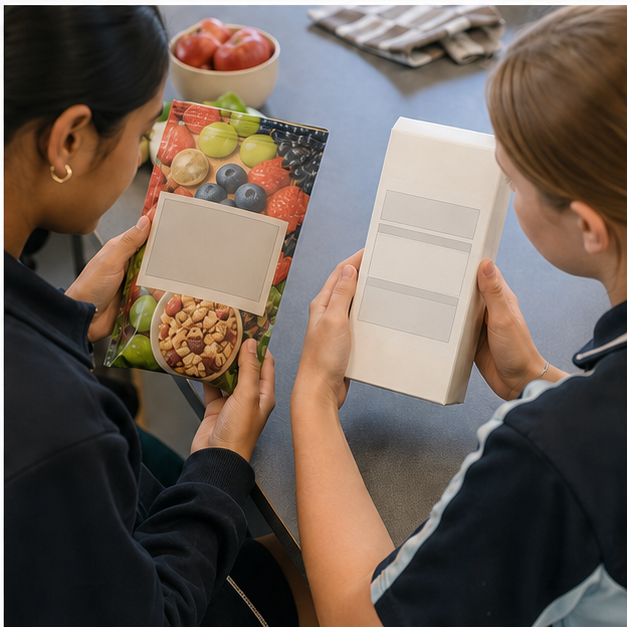

Class presentation
Module 3 — 8-slide lesson deck
Use the deck to introduce the three connected ideas, pause for decisions and hand evidence into the learning packages.

{kind=link}
Section 3.1
Ingredients, servings and nutrition panels
Learning intention: Locate and interpret Australian label evidence including ingredient order, allergens, serving information and per 100 g or 100 mL data.
Success looks like
- I can explain what ingredient order does and does not reveal.
- I can use per serve and per 100 g or 100 mL for different decisions.
- I can combine nutrition, allergen, date and storage evidence.
A label has evidence zones
Australian packaged-food labels combine the food name, ingredient list, allergen declaration, nutrition information panel, date mark, storage directions, quantity and supplier details. Each answers a different question. The nutrition panel does not tell the complete ingredient story, and a bright front label does not replace required information elsewhere. Efficient readers begin with their purpose—checking an allergen, comparing sodium, estimating a serve or confirming storage—then go to the evidence zone able to answer it.

Ingredient order shows formulation
Ingredients are generally listed in descending order by ingoing weight when the food is made. This identifies dominant ingredients and can locate sources of sugars, fats or grains, but does not give the exact amount of every ingredient. Compound ingredients may show components, and similar ingredients can have different names. A long list is not automatically unhealthy, just as a short list is not automatically suitable. Interpret it with the nutrition panel and the eater's needs.
Serving size needs scrutiny
The manufacturer states serving size and serves per package. It helps estimate nutrients in a planned amount but is not necessarily a recommended amount or what a student will eat. Similar products can use different serve sizes, making per-serve numbers look more different than the products really are. Before comparing, check the grams or millilitres in each stated serve and the actual portion being considered.
Per 100 g supports fair comparison
Per 100 g, or per 100 mL for liquids, puts similar products on a common amount. It is a strong starting point for comparing energy, protein, saturated fat, total sugars or sodium within a category. Per serve then translates the result to the likely portion. Total sugars include naturally present and added sugars where present; the ingredient list gives source context but may not quantify each. Describe evidence accurately rather than claiming more than the panel shows.
Safety can outweigh preference
Allergen declarations help people avoid ingredients that can cause serious reactions, and current Australian labels use required plain-English allergen names. A use-by date concerns safety and food should not be eaten after it; a best-before date concerns expected quality when stored as directed. Storage and preparation instructions affect safety after purchase. For an allergy or medical restriction, use the current label with the person's management plan and adult or professional guidance. Guessing is not acceptable.
Equivalent pathway — no video required
Label evidence-zone scan
Purpose prompt: No video is required. Which zone comes first for an allergen check, sodium comparison and portion estimate?
Use the package photo only to locate likely evidence zones; do not invent values from blank generated panels. Apply the safety, comparison and portion passes to the complete fictional yoghurt labels supplied in Applied activity 3.1.
Learning package 3.10/10 + response
Use each explanation to repair your thinking as you go. All work saves only in this browser on this device.
Knowledge checks
Long response
Response scaffold
- State the eater's purpose and safety requirement.
- Map each question to the correct label zone.
- Explain ingredient order and its limitation.
- Compare per 100 g, then translate to planned serve.
- Finish with date, storage and one thing the label cannot prove.
Quality criteria
- Uses Australian label terminology.
- Separates safety, formulation, comparison and portion evidence.
- Explains limitations rather than treating the panel as a verdict.
- Prioritises allergens and use-by information.
Folio handoff: Save as “M3.1 Label evidence pathway” with an annotated package and checklist. Open My folio.
0/10 checks saved · long response still needs detail
Resume this packageSection 3.2
Comparing foods fairly
Learning intention: Use a repeatable evidence process to compare like products for a stated purpose and make a conditional recommendation.
Success looks like
- I can define the comparison purpose before selecting nutrients.
- I can use a common amount and then account for actual portion.
- I can make a conditional recommendation with trade-offs.
Begin with a decision question
A fair comparison begins with what the choice is for. Selecting a regular lunchbox yoghurt may involve calcium, protein, total sugars, saturated fat, portion, allergy needs, cost and cold storage. Choosing a recipe ingredient may use different criteria. Without a decision question, it is easy to hunt for whichever number makes a preferred product win. State the audience, occasion and need first, then select evidence that genuinely informs that decision.

Compare like with like
Products should be similar enough for the comparison to answer the question. Comparing plain yoghurt with confectionery does not show which yoghurt better suits breakfast. Within a category, use per 100 g or 100 mL to create a common baseline and ensure units agree. Record nutrients relevant to the purpose, not every number. If a product is concentrated, diluted or prepared with another ingredient, explain that context rather than pretending the baseline is the whole meal.
Bring back the real portion
Standardisation is only the first step. The amount eaten determines contribution, so calculate or read values for the realistic portion. A product may look lower per serve only because its stated serve is smaller. A nutrient-rich option may also be eaten in a smaller amount as part of a mixed meal. Use arithmetic carefully and state assumptions. If the planned amount is unknown, present a range or say what needs confirmation rather than inventing precision.
Choose criteria for the purpose
Nutrients are not simply ‘more is better’ or ‘less is better’. Protein or fibre may support a sustaining snack; sodium or saturated fat may matter to the overall pattern; total sugars need ingredient context because they combine natural and added sources. Calcium may matter in dairy or fortified alternatives. Food safety, allergies, cultural fit, cost and packaging impact can outweigh a small numeric difference. Good comparisons show these trade-offs.
Recommend conditionally
A defensible recommendation states why one option is the stronger fit under stated conditions, then names what could change the decision: “For a refrigerated school snack, B is the stronger fit because…; if a dairy-free product is needed, reassess.” This is more honest than calling one product healthiest for everyone. Labels describe the packaged food, not the person's whole pattern, medical needs, access or values.
Equivalent pathway — no video required
Fair-comparison worked example
Purpose prompt: No video is required. Which apparent advantage disappears on the same-amount comparison?
Use the equal bowls, scale and matching grids to explain what a fair comparison controls. Then use the paired fictional yoghurt data in Applied activity 3.2 to compare per 100 g first, calculate each whole tub and write a conditional recommendation.
Learning package 3.20/10 + response
Use each explanation to repair your thinking as you go. All work saves only in this browser on this device.
Knowledge checks
Long response
Response scaffold
- Define audience, occasion and decision question.
- Check the products are comparable.
- Compare three relevant values per 100 g or 100 mL.
- Translate to planned portion and interpret ingredients.
- Add safety, access, cost, culture or environment and conclude conditionally.
Quality criteria
- Uses a common amount accurately.
- Selects criteria for the purpose.
- Shows trade-offs and uncertainty.
- Avoids universal health claims.
Folio handoff: Save as “M3.2 Fair food comparison” with evidence table, calculations and conditional recommendation. Open My folio.
0/10 checks saved · long response still needs detail
Resume this packageSection 3.3
Marketing claims, ethics and health
Learning intention: Evaluate food marketing and front-of-pack claims against regulated evidence, audience needs and ethical responsibilities.
Success looks like
- I can distinguish a marketing impression from checkable evidence.
- I can use Health Star Rating for appropriate within-category comparison.
- I can evaluate accuracy, omission, audience impact and responsibility.
Claims frame attention
Food packages and promotions use words, colour, images, placement, influencers and serving suggestions to direct attention. A claim may be factual and permitted while presenting only one favourable feature. “Source of calcium” does not mean low in added sugars, allergen-safe or better than every alternative. Critical reading does not assume all marketing is dishonest; it asks what is claimed, what evidence supports it and what important information sits outside the frame.

Use evidence behind the claim
Nutrition-content and health claims are governed by the Food Standards Code and must meet conditions. Students need not memorise every threshold to evaluate a package. Locate matching evidence in the panel or ingredients, check exact wording and avoid extending it. If a claim says “reduced”, the comparison basis matters. A nutrient claim does not prove the whole product fits a person's needs. Unsupported testimonials and vague wellness language deserve extra scrutiny.
Health Star Rating is a comparison tool
Health Star Rating summarises selected nutrition information from half a star to five stars. It is designed mainly to compare similar packaged foods within a category, not yoghurt with oil or packaged food with an unpackaged vegetable. Participation is voluntary, and the star does not replace ingredients, allergens or the full panel. A higher star can inform a choice, but it is not a moral score or a complete measure of someone's diet.
Audience and omission matter
Young people encounter food messages through packaging, sport sponsorship, games, short video and influencers. Repetition, humour and social proof can make a product feel normal or necessary even with little evidence. Ethical communication should be identifiable as advertising, avoid misleading impressions and consider less-experienced audiences. Ask who benefits, who is targeted, what is omitted and whether the message remains fair when missing information appears beside it.
Separate health, environment and ethics
A recyclable package, local ingredient or plant-based claim may concern environmental or ethical values, but does not by itself establish nutritional suitability. A nutritious profile also does not prove fair labour or low environmental impact. Responsible decisions may need label data, sourcing evidence, disposal guidance, price, access, culture and health needs. When evidence is missing, the honest conclusion is conditional. Ethical evaluation means matching each claim to evidence, not blind trust or automatic cynicism.
Equivalent pathway — no video required
Claim–evidence–omission audit
Purpose prompt: No video is required. Which element is evidence, which is persuasion and what remains unanswered?
Use the front-versus-back package photo to notice how first impressions differ from evidence checking. Test the complete written Berry Crunch claims and ingredient list in Applied activity 3.3, then rewrite one claim more fairly.
Learning package 3.30/10 + response
Use each explanation to repair your thinking as you go. All work saves only in this browser on this device.
Knowledge checks
Long response
Response scaffold
- Describe audience and first impression.
- Identify two exact or implied claims.
- Match each claim to evidence without extending it.
- Explain one omission and its likely effect.
- Make a conditional judgement separating health, environment and social evidence.
Quality criteria
- Distinguishes persuasion, regulated information and inference.
- Uses Health Star Rating appropriately.
- Explains audience impact without assuming students are powerless.
- Makes uncertainty and trade-offs explicit.
Folio handoff: Save as “M3.3 Claim–evidence–omission audit” with annotated promotion, source links and a fairer revised message. Open My folio.
0/10 checks saved · long response still needs detail
Resume this packageEnd-of-module review
Check, repair and save
- Revisit Ingredients, servings and nutrition panelsContinue
- Revisit Comparing foods fairlyContinue
- Revisit Marketing claims, ethics and healthContinue
Open this module’s Applied Learning Activities · Open its media pathways · Keep selected evidence in My folio